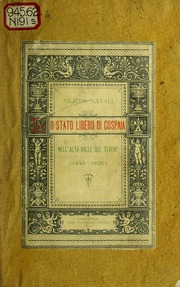
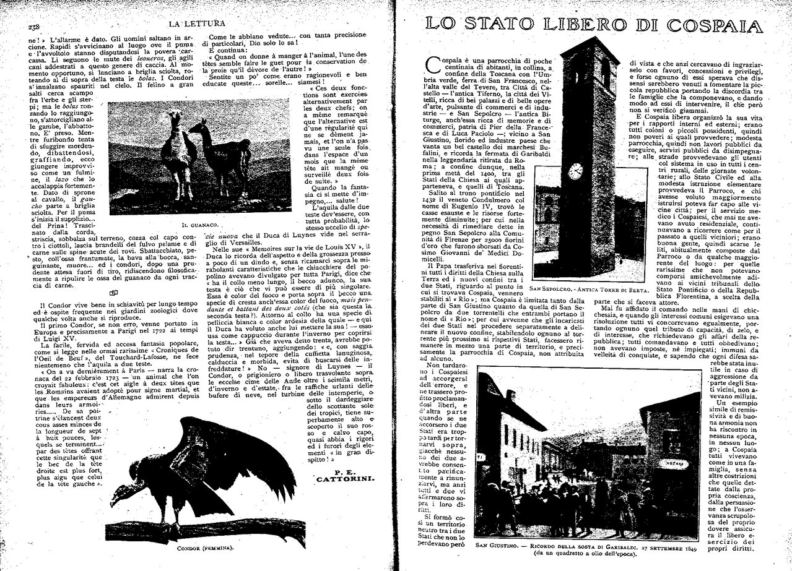
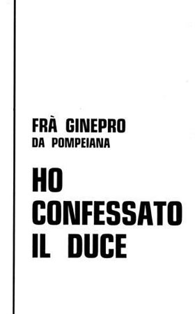
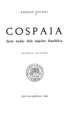
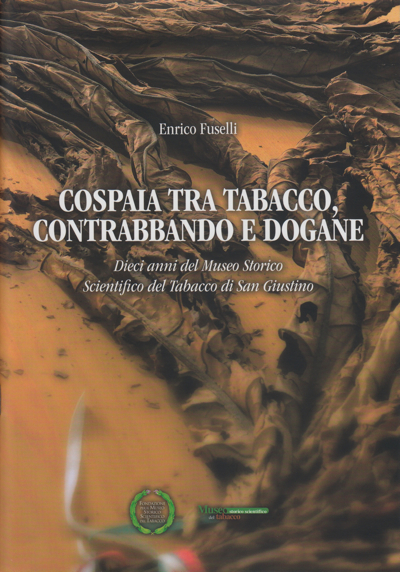

26:35 · 7 OPERE
Lo Stato libero di Cospaia.
Il filo del discorso
La storia di Cospaia diventa l’occasione per una riflessione sulla libertà e sulla possibilità di immaginare forme sociali alternative. Dr Divago prende le mosse dal motto della piccola comunità e ricostruisce la vicenda dei confini fra territori pontifici e fiorentini: l’equivoco sui corsi d’acqua avrebbe lasciato agli abitanti uno spazio di autonomia. Seguono la descrizione del consiglio degli anziani, della zona franca e dei commerci, insieme a carte, stemmi e bandiere commentati dal relatore. La rassegna degli scritti di Natali, fra Ginepro, Ascani e Fuselli introduce il problema della memoria storica: il relatore interpreta la scarsa notorietà di Cospaia come segno di una formazione poco disposta a interrogare i modelli dominanti. Il discorso si sposta quindi dall’esperienza locale al significato della libertà, attraverso Rousseau, Spinoza, Milton e le quattro libertà di Roosevelt. Il richiamo a Pangloss accompagna la polemica contro l’ottimismo ufficiale; le citazioni attribuite a Wiesel, Franklin e Lincoln riportano il ragionamento alla responsabilità verso gli altri. Nella conclusione, la libertà viene collegata alla capacità di chiedere ragioni, difendere il significato delle parole e resistere alla manipolazione. Le valutazioni politiche e le accuse rivolte alla contemporaneità restano posizioni del relatore.
I libri nel discorso

Lo stato libero di Cospaia nell’alta Valle del Tevere (1440–1826)
Copertina: Umbertide · Stabilimento tipografico Tiberino · 1892
Copertina autentica dell’esemplare ottocentesco digitalizzato dalla University of Illinois: titolo e nome di Filippo Natali leggibili entro il fregio decorativo. La dicitura 1440–1826 appartiene al titolo del libro.
Filippo Natali è nominato con la data 1892 nella rassegna degli scritti su Cospaia.
Passaggio 12:01 ↗ · Fonti e libro ↗
Lo Stato Libero di Cospaia
Prima pagina dell’articolo, nell’apertura della rivista: La Lettura · anno XXV, fascicolo 3 · 1º marzo 1925 · pp. 239–240
Riproduzione autentica Braidense dell’apertura 238–239: l’articolo comincia sulla pagina destra, con il titolo Lo Stato Libero di Cospaia; a sinistra termina un altro contributo. L’immagine è conservata intera. Non è una copertina né l’articolo completo. Il portale dichiara accesso pubblico e uso non commerciale; per usi commerciali rimanda alla Braidense.
Il relatore nomina Lo stato libero di Cospaia di fra Ginepro e la data 1925: articolo di due pagine, non volume autonomo.
Passaggio 12:39 ↗ · Fonti e libro ↗
Ho confessato il Duce
Copertina: Esemplare del catalogo L’Ultima Crociata · ristampa non datata · 136 pagine
Copertina tipografica bianca autentica, con autore e titolo in nero, pubblicata dal catalogo L’Ultima Crociata. L’anno della ristampa non è ricavabile dalla scheda: non si assegna all’immagine il 1970 della precedente edizione Grafiche Riviera.
Il titolo Ho confessato il Duce è pronunciato nella presentazione dell’autore dell’articolo.
Passaggio 12:57 ↗ · Fonti e libro ↗
Cospaia. Storia inedita della singolare Repubblica
Frontespizio della seconda edizione: Istituto Professionale di Stato per l’Industria e l’Artigianato · seconda edizione, 1965
Frontespizio autentico della seconda edizione, Città di Castello 1965, dalla scansione universitaria. Non è presentato come copertina esterna. Il 1963 citato nel video riguarda un’edizione precedente.
Angelo Ascani è nominato con la data 1963; poco dopo viene letto il sottotitolo Storia inedita della singolare Repubblica.
Passaggio 12:30 ↗ · Fonti e libro ↗
Cospaia tra tabacco, contrabbando e dogane
Copertina: San Giustino · Museo Storico Scientifico del Tabacco · 2014
Copertina autentica del volume del decennale, dal sito dell’autore: fotografia di foglie di tabacco, autore, titolo, sottotitolo e marchi museali.
Sono pronunciati titolo, autore e pubblicazione museale del 2014.
Passaggio 13:18 ↗ · Fonti e libro ↗
Il contratto sociale
Identificazione probabile
Copertina: Laterza · Economica · ristampa 2023 · edizione di riferimento
La formula su uomini nati liberi e in catene è attribuita a Rousseau; titolo non annunciato, riscontro probabile con l’apertura del Contratto sociale.
Passaggio 14:41 ↗ · Fonti e libro ↗
Candido o l’ottimismo
Identificazione probabile
Copertina: Feltrinelli · Universale Economica I Classici · 2013 · traduzione di Stella Gargantini
Immagine autentica dell’opera, controllata visivamente; l’edizione di riferimento non è attribuita al filmato.
Pangloss e il migliore dei mondi possibili rimandano probabilmente al racconto di Voltaire; titolo non annunciato.
Passaggio 19:13 ↗ · Fonti e libro ↗